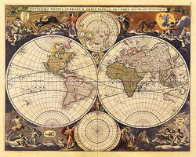

About SDSS
Mapping the Universe

Mapmaking—laying a gridwork for reality—is an activity
central to the step-by-step advance of human knowledge. Recently there
has been an explosion in the scale and diversity of mapmaking enterprises,
in fields as disparate as genetics, oceanography, neuroscience, and
surface physics, applying ever-improving computer technology to the task
of exploring enormous and complex new territories. This ability to record
and digest immense quantities of data in a timely way is changing the face
of science. The Sloan Digital Sky Survey (SDSS), the most ambitious
astronomical survey project ever undertaken, applies this ability to
cosmography, the science of mapping the universe and determining our place
in it.
SDSS is systematically mapping a quarter of the entire sky,
producing a detailed image of it and determining the positions and
absolute brightnesses of more than 100 million celestial objects. It
is also measuring the distances to a million of the nearest galaxies,
giving us a three-dimensional picture of the universe through a volume
one hundred times larger than that explored to date. SDSS is also
recording the distances to 100,000 quasars — the most distant
objects known — giving us unprecedented knowledge of the
distribution of matter to the edge of the visible universe.
New Discoveries
 In 2006, SDSS advanced mankind's understanding of the universe with
several new discoveries. The survey found new dwarf companion
galaxies to the Milky Way; confirmed Einstein's
prediction of cosmic magnification; observed the largest known structures in
the universe (measuring more than a billion light years across); and
further unraveled our galaxy's active past, filled with galactic
mergers. In the coming years, SDSS will continue to expand our
horizons with new
studies of the structure and origins of the Milky Way Galaxy and the
nature of dark energy.
In 2006, SDSS advanced mankind's understanding of the universe with
several new discoveries. The survey found new dwarf companion
galaxies to the Milky Way; confirmed Einstein's
prediction of cosmic magnification; observed the largest known structures in
the universe (measuring more than a billion light years across); and
further unraveled our galaxy's active past, filled with galactic
mergers. In the coming years, SDSS will continue to expand our
horizons with new
studies of the structure and origins of the Milky Way Galaxy and the
nature of dark energy.
As the first large-area survey to use electronic light detectors, SDSS
produces images substantially more sensitive and
accurate than
earlier surveys, which relied on photographic techniques. The results are
available to the scientific
community electronically, both as images and
as precise catalogs of all objects discovered. SDSS also
represents a significant increase in scale. The total quantity of survey
information produced (about 15 terabytes, or a trillion bytes) rivals the
information content of the Library of Congress.
By systematically and sensitively observing such a large fraction of
the sky, SDSS has had a significant impact on astronomical studies. It
represents a new reference point, a field guide to the universe at the
millenium, which will be used by scientists for decades to come.